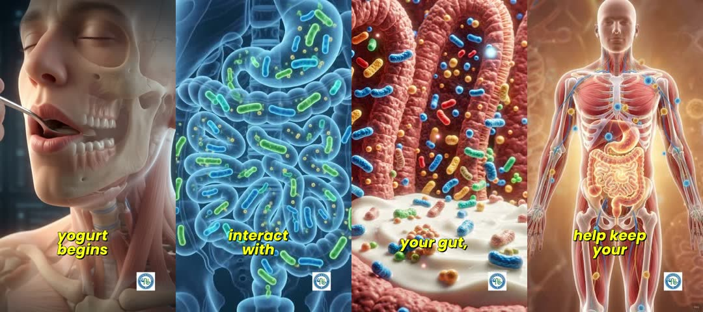
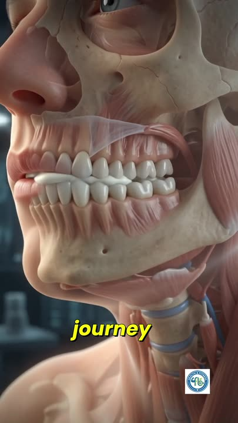
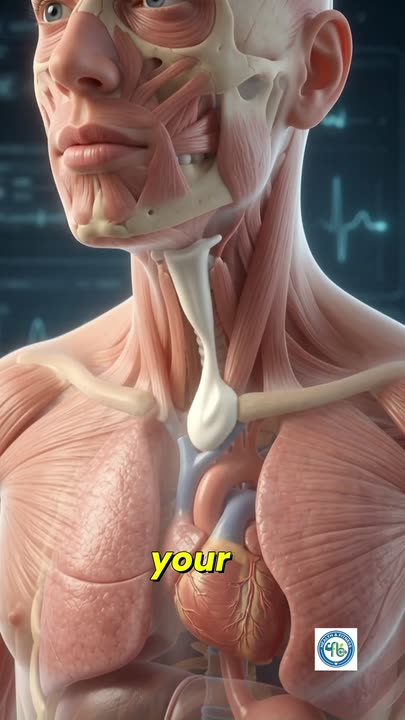
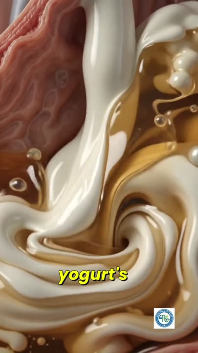
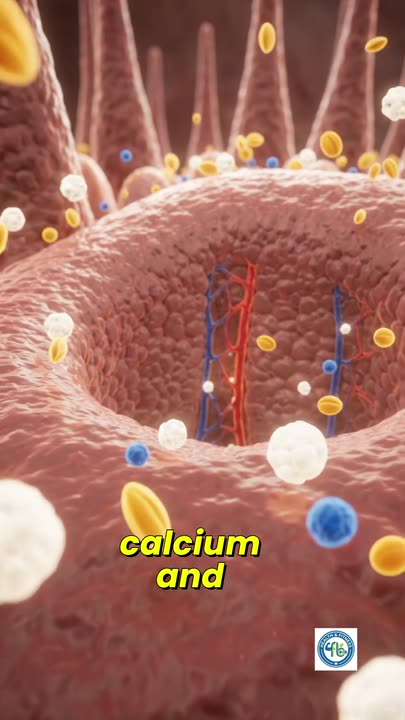
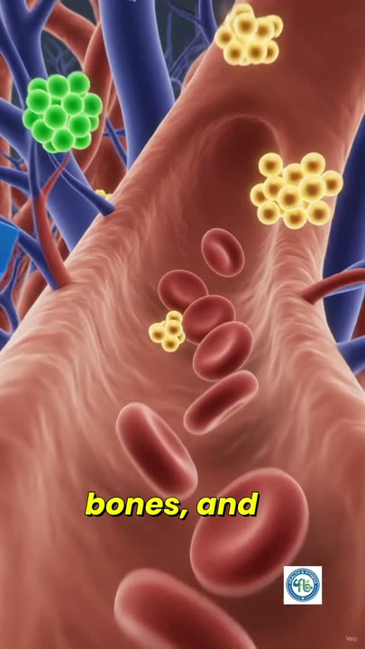
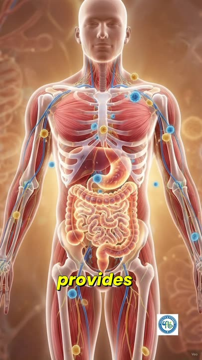

A complete forensic teardown of the 64-second “What happens when you eat Greek yogurt” short — and the exact prompt system to rebuild it with Veo 3.
And yes — we can absolutely make these. The format is mechanical: one sentence of script → one image prompt → one image-to-video prompt → one 8-second clip. The whole build is in section 05, with all 16 prompts written out in section 06.
One spoonful of Greek yogurt is followed from the mouth to the bloodstream. There is no presenter, no hook line, no product and no call to action. The entire video is a single continuous camera journey through a semi-transparent human body, narrated by a synthetic voice, with karaoke captions burned into the picture.
It is an explainer, not an ad. Nothing is sold and nothing is claimed beyond textbook physiology — which is exactly why it can run on every platform without a compliance problem. The only branding is a small circular logo in the corner.
The watermark: a circular “HEALTH & FITNESS” mark with a leaf-and-dumbbell monogram, bottom-right, on-screen for all 64 seconds.
The logo is not a transparent PNG — it is pasted on an opaque white tile that punches a bright hole in dark footage. On the near-black shots it is the brightest object in frame.
The script is a chain of anatomical locations, each one handing off to the next. That is the whole structural trick, and it is what makes the format infinitely repeatable:
| # | Beat | Location | The hand-off |
|---|---|---|---|
| 1 | Intake | Mouth | chewing & saliva → swallowing |
| 2 | Transit | Esophagus | muscle contractions → stomach |
| 3 | Breakdown | Stomach | acid & protein → nutrients released |
| 4 | Arrival | Small intestine | probiotics → gut microbiome |
| 5 | Absorption | Intestinal villi | nutrients → bloodstream |
| 6 | Distribution | Bloodstream | blood → muscles, bones, organs |
| 7 | Residency | Gut flora | bacteria settle → balance |
| 8 | Payoff | Whole body | the benefit, stated plainly |
Beats 1–7 are physiology. Beat 8 is the only one that sells anything — and it only ever promises “healthy, energized, functioning at its best”. Nothing measurable, nothing falsifiable, nothing a platform can act on.
Scene detection returns cuts at 8, 16, 24, 32, 40, 48 and 56 seconds. Not 7.9. Not 8.2. Seven hard cuts, no dissolves, no transitions, dividing 64 seconds into eight identical 8.000-second blocks.
The voice-over contains exactly eight sentences, and sentence N carries clip N. Sentence 1 runs 0.10–7.88 s, sentence 2 runs 7.88–14.88 s, sentence 8 runs 55.84–63.86 s. One sentence, one clip, one 8-second block — all the way through.
The audio was not chopped to the cuts, though. Six of the eight sentences begin fractionally before their clip does — by 0.04 to 0.16 s — because the narration is one continuous track laid underneath the picture. That small overlap is the proof of how it was built, and it is covered next.
That is not a coincidence and it is not editing skill. It is the signature of a pipeline where the generator’s clip length is the unit of composition. The writer did not write a script and then cut it up; they wrote eight sentences that each had to fit inside 8 seconds, because 8 seconds is all the tool gives you.
8.000 s is Veo 3 / Veo 3.1’s maximum single-generation length. It is unusual among the competition — Kling gives 5 or 10 s, Runway 5 or 10 s, Hailuo 6 or 10 s, Sora 5–20 s. A video built in exact 8-second bricks is consistent with a Veo pipeline, though clip length alone is not proof of the model.
Three independent measurements say the narration was not generated with the video:
So the build order was: write eight sentences → render one continuous TTS track → generate eight silent 8-second clips → lay them under the voice → auto-caption → export.
Each card is one generated clip: the exact voice-over line it carries, what is on screen, and the camera move inside it. Note how the camera scale escalates — wide body → organ → macro → microscopic → back to whole body for the payoff.






There is no hook, no question and no cliffhanger anywhere in this video. What holds attention is scale change — each clip is visually a different world from the last, and the two boldest palette breaks (the cold blue x-ray at 24 s and the warm gold hero at 56 s) land exactly where a viewer would otherwise drop off. Copy that placement.
| Property | Value | Read |
|---|---|---|
| Duration | 64.110 s | 8 × 8.000 s, then 3 black frames |
| Resolution | 1080 × 1920 | 9:16, correct for every short-form platform |
| Frame rate | 30 fps (1923 frames) | container rate — see the cadence note below |
| Video codec | H.264 Main, yuv420p, bt709 | maximum compatibility |
| Bitrate | 19.1 Mbps | very high; ~3× what platforms need. 146 MB for 64 s |
| Audio | AAC-LC 192 kbps, 48 kHz, stereo | stereo container, mono content |
| Encoder tag | https://clipchamp.com | assembled in Microsoft Clipchamp — free, browser-based |
| Cuts | 7 internal hard cuts | 8, 16, 24, 32, 40, 48, 56 s — zero transitions. An 8th cut at 64.000 s drops to 3 black frames |
Frame-difference analysis finds about 179 distinct frames in every 8-second block (measured 177–181, mean 178.8 of 240) — and the duplicates sit at a perfectly periodic 4 in every 15 frames, at the same offsets in all eight clips. That is a content cadence of ≈22.3 fps inside a 30 fps container, so roughly one frame in four is a duplicate and the motion carries an uneven judder.
Veo 3.1 outputs 24 fps, so the clips were re-timed somewhere in the chain — most likely a slight speed change or a non-integer frame-rate conversion on export. The lesson for us: set the editor timeline to match the generator (24 fps) and never speed-adjust a clip to make it fit. Stretching an 8-second clip is what produces this.
| Property | Value |
|---|---|
| Words | 149 |
| Sentences | 8 — one per clip |
| Words per sentence | 16–22 (mean 18.6) |
| Pace | 140 wpm overall (123–165 per line) |
| Spoken time per clip | 6.84–8.02 s (mean 7.57 s) |
| Headroom per clip | 0.43 s average |
| Loudness range | 2.6 LU — synthetic, no dynamics |
| Channels | mono content in a stereo file |
18.6 words per sentence at 140 wpm fills an 8-second clip with ~0.4 s to spare. That is the rule that makes the whole format work. Write every line to 16–20 words and the picture and the voice stay locked together forever, with no editing.
1 · 0–8sOne spoonful of Greek yogurt begins an incredible journey, entering your mouth where chewing and saliva prepare it for healthy digestion.
2 · 8–16sAfter swallowing, the yogurt smoothly travels down your esophagus, moving safely toward the stomach through gentle muscle contractions.
3 · 16–24sInside your stomach, digestive juices break down the yogurt’s protein, preparing valuable nutrients for absorption throughout your body.
4 · 24–32sThe probiotics reach your small intestine, where they interact with your gut microbiome and help support a healthy digestive environment.
5 · 32–40sTiny intestinal villi absorb protein, calcium, and vitamins, sending these essential nutrients directly into your bloodstream.
6 · 40–48sYour bloodstream delivers these nutrients to muscles, bones, and organs, helping fuel normal body functions every single day.
7 · 48–56sBeneficial bacteria thrive inside your gut, helping maintain microbial balance and supporting healthy digestion from within.
8 · 56–64sFrom stronger bones to better digestion, Greek yogurt provides nutrients that help keep your body healthy, energized, and functioning at its best.
| Property | Value |
|---|---|
| Cards | ~97 (measured by mask change) |
| Words per card | 1–3, typically 2 |
| Time on screen | median 0.50 s per card · 94.5% of runtime |
| Blank gaps | 5 runs, 3.5 s total — all on audio pauses |
| Style | heavy italic sans, RGB(248,252,3) fill, black outline |
| Position | centred, median y = 77.5% of frame height (73–83% for 2-line cards) |
| Source | auto-generated from the VO — zero prompts, zero typing |
Card count is approximate: the captions animate as they appear, so the boundary detector can over- or under-split a card by one. The 2-words-per-card cadence and the 0.5 s median are solid.
| Measurement | Value | Verdict |
|---|---|---|
| Integrated loudness | −26.7 LUFS | 12.7 LU below the ~−14 LUFS platform target |
| True peak | −11.4 dBFS | 11 dB of headroom left unused |
| Loudness range | 2.6 LU | flat — pure TTS |
| Level in speech gaps | −51 to −60 dB | digital silence — there is no music bed at all |
1. It is far too quiet. At −26.7 LUFS this plays noticeably quieter than everything around it in a feed. Platforms turn loud audio down; they do not reliably turn quiet audio up. Normalise to about −14 LUFS.
2. There is no music. The gaps between sentences are true silence, and there are three of them over a second long. Silence in a vertical feed is a scroll cue. A quiet bed at −28 to −30 dB under the voice costs nothing and removes the dead air.
The constraint that shapes this whole video — 8-second maximum clips — is Veo 3’s constraint. Every other tool in the pipeline is free or already ours. Here is the production system.
| Capability | Value | What it means for this format |
|---|---|---|
| Clip length | 4, 6 or 8 s | 8 s is the atomic unit. Write to it. |
| Frame rate | 24 fps | set the edit timeline to 24 fps to match |
| Aspect ratio | 16:9 and 9:16 native | generate vertical — never crop later |
| Resolution | 720p / 1080p (4K upscale) | 1080p is plenty for 9:16 |
| Image-to-video | yes — first frame, optional last frame | this is the mode we want |
| Reference images | yes — “ingredients” | how you keep one body across 8 clips |
| Native audio | on by default | turn it off — it fights the voice-over |
| Extend | +7 s per extension, up to ~148 s | not needed — hard cuts are better here |
1. Audio off. Veo generates its own sound. Layered under a TTS narration you get two competing ambiences and phantom voices. Set generateAudio: false on the API, or mute every clip in the editor if you are working in Flow.
2. Never ask for text. Veo renders on-screen writing as garbled pseudo-letters. Every prompt must end with “no text, no captions, no on-screen writing, no logos”. All type comes from the editor afterwards.
3. Generate 9:16 natively. Do not make 16:9 and crop — you lose the vertical composition that makes an anatomy shot read on a phone.
Bob, this is the part that matters most. Going text → image → video instead of text → video buys three things that this format lives or dies on:
64 seconds of output at Google’s published Gemini API rates:
| Tier | Per second | 64 s of video | With a 1.5× retry budget |
|---|---|---|---|
| Veo 3.1 Lite 1080p | $0.08 | $5.12 | ~$7.70 |
| Veo 3.1 Fast 1080p | $0.12 | $7.68 | ~$11.50 |
| Veo 3.1 Standard 1080p | $0.40 | $25.60 | ~$38.40 |
Rates read from Google’s own Gemini API pricing page on 9 Aug 2026 and they move — confirm against your console before committing to volume. If you are driving Flow on a Google AI Pro/Ultra subscription instead, it bills in credits, not per second, and the per-video cost is effectively fixed by your plan.
Anatomical renders are smooth, slow and low-detail-motion — the easiest possible case for a fast tier. Generate the whole first video on Fast, and only escalate a clip to Standard if it visibly fails. On a 5-video test that is the difference between roughly $38 and $128.
| # | Step | Tool | Output | Prompts |
|---|---|---|---|---|
| 1 | Write 8 sentences, 16–20 words each | LLM | the script | 1 |
| 2 | Render one continuous narration | TTS | one ~64 s voice track | 0 |
| 3 | Generate 8 keyframes | image model | 8 stills, 9:16 | 8 |
| 4 | Animate each keyframe | Veo 3.1, audio off | 8 × 8 s silent clips | 8 |
| 5 | Lay clips under the voice, butt-joined | editor | 64 s timeline | 0 |
| 6 | Auto-caption, add music bed, watermark | editor | finished short | 0 |
| 7 | Normalise to −14 LUFS, export 24 fps | editor | upload file | 0 |
16 prompts written by hand. Everything else is a render, a drag or a checkbox.
These are written to rebuild the video you sent, so you can hold each one against its frame in section 03 and see the mapping. Swap the subject and the anatomy and the same 16 slots produce any “what happens when you eat X” short.
The IMAGE PROMPT describes a still — the first frame, frozen. It contains no motion words at all. The IMAGE-TO-VIDEO PROMPT describes only what changes over the 8 seconds — subject motion first, then camera, then pace. Keeping those two jobs separate is what stops Veo re-inventing your frame.
Photorealistic 3D medical visualisation, vertical 9:16 composition. Three-quarter profile of a human head and neck, skin rendered semi-transparent to reveal the skull, jaw muscles, teeth and tongue beneath. A stainless steel spoon holding a thick dollop of white Greek yogurt is at the open lips. Clinically accurate anatomy, subsurface scattering, wet specular highlights on the tongue. Background is a dark navy-teal medical interface, far out of focus, with faint glowing cyan panels. Soft rim light from upper left, shallow depth of field, cinematic, highly detailed. No text, no captions, no logos.
The spoon slides into the mouth and withdraws empty, leaving the white yogurt on the tongue. The jaw closes and chews twice. The tongue pushes the yogurt back toward the throat and it begins to descend. Glowing cyan arrows fade in along the throat, pointing downward. Camera pushes in slowly and tilts down to follow the throat. Smooth continuous motion, documentary pace, no camera shake. No text, no captions, no on-screen writing.
Photorealistic 3D medical visualisation, vertical 9:16 composition. Front view of a human head and upper torso with the skin removed and the musculature semi-transparent, revealing lungs, heart, the full esophagus and the stomach below. A rounded white bolus of yogurt sits at the top of the esophagus, just below the throat. Same anatomical model and lighting as the previous shot. Dark navy-teal medical interface background, far out of focus, faint cyan ECG trace. Soft key light from upper left, shallow depth of field, cinematic, highly detailed. No text, no captions, no logos.
The white bolus travels smoothly down the esophagus toward the stomach. The esophageal walls contract in a travelling wave behind it, squeezing it downward. It reaches the stomach and drops in. Camera dollies in slowly, following the bolus down the chest. Slow, smooth, weighty motion. No camera shake. No text, no captions, no on-screen writing.
Photorealistic 3D medical visualisation, vertical 9:16 composition. Cutaway of a human stomach seen from inside the abdomen, the pink ridged gastric wall in the round, holding a pool of amber digestive fluid with thick white yogurt folded into it. Small pearl-like white protein clusters suspended in the liquid. Wet glossy surfaces, warm amber bounce light, dark navy-teal medical interface far out of focus behind. Shallow depth of field, cinematic, highly detailed. No text, no captions, no logos.
The stomach wall contracts rhythmically and churns. The white yogurt swirls and folds into the amber digestive fluid, breaking apart into smaller strands. Pearl-like protein clusters separate out and drift through the liquid. Small bubbles rise. Camera pushes in hard and steadily, from the whole stomach to a macro view of the swirling fluid. Continuous fluid motion, no camera shake. No text, no captions, no on-screen writing.
Photorealistic 3D medical visualisation, vertical 9:16 composition. Full standing human body rendered as a cold blue translucent x-ray, arms at the sides, the skeleton and organs faintly visible inside. The small intestine is picked out in brighter blue and is filled with small glowing green and cyan rod-shaped bacteria. Deep navy background with faint holographic data panels and small numeric readouts at the edges of frame. Clean clinical lighting, cinematic, highly detailed. No text, no captions, no logos.
The green and cyan bacteria drift and multiply inside the intestine, glowing brighter. Camera pushes forward continuously, from the full body into the abdomen and through into a macro view of the intestinal wall, where the rod-shaped bacteria are now large and clearly separated against pink tissue. One single smooth accelerating push. No cuts, no camera shake. No text, no captions, no on-screen writing.
Photorealistic 3D medical visualisation, vertical 9:16 composition. Extreme macro of the inner lining of the small intestine — a field of finger-shaped pink villi rising toward the top of frame, textured with fine microvilli. Floating between them are gold lens-shaped particles, small white spheres and a few blue spheres representing absorbed nutrients. Warm subsurface glow inside the tissue, soft depth haze, shallow depth of field, cinematic, highly detailed. No text, no captions, no logos.
The villi sway gently. The gold and white nutrient particles drift toward the villi and are drawn into the tissue surface, disappearing inside. A network of red and blue capillaries inside the villi lights up warmly as the nutrients enter. Camera orbits slowly to the right and cranes down, revealing a cut-open villus with its capillary loop running through the centre. Slow, calm, continuous. No camera shake. No text, no captions, no on-screen writing.
Photorealistic 3D medical visualisation, vertical 9:16 composition. Inside the body among a dense network of blood vessels — deep blue veins crossing red muscle tissue, running from the bottom of frame into the distance. Floating in the foreground are small clustered nutrient molecules rendered as yellow, green and blue geometric shapes, with a few red blood cells. Warm red ambient light, volumetric depth haze, shallow depth of field, cinematic, highly detailed. No text, no captions, no logos.
The nutrient clusters and red blood cells stream past the camera as it travels forward through the vessel network. Halfway through, the camera pulls back smoothly and continuously, the vessels receding until the whole body is visible as a pale blue x-ray figure with the brain and heart glowing warmly, nutrients arriving throughout. One continuous move, forward then back. No cuts, no camera shake. No text, no captions, no on-screen writing.
Photorealistic 3D medical visualisation, vertical 9:16 composition. Macro view inside the gut — tall pink villi like a forest filling the frame, and a smooth layer of white yogurt pooled across the floor between them. Hundreds of small rod-shaped and spherical bacteria in saturated blue, green, red, orange and yellow are scattered over the tissue and through the air. Warm bounce light from the white layer below, soft depth haze, shallow depth of field, cinematic, highly detailed. No text, no captions, no logos.
The coloured bacteria drift slowly through the space between the villi and settle onto the tissue surface. A few divide and multiply. The villi sway very gently. The white yogurt layer below shifts slowly. Camera drifts laterally to the right, extremely slowly, almost still. Calm, unhurried, continuous. No camera shake. No text, no captions, no on-screen writing.
Photorealistic 3D medical visualisation, vertical 9:16 composition. Full standing human figure facing forward, arms slightly away from the body, rendered as translucent skin over visible skeleton and red musculature, with the stomach and intestines clearly picked out and glowing warm orange. Warm golden amber background with soft radial light behind the figure and faint floating particles. Heroic centred symmetrical composition, full body in frame head to feet, cinematic, highly detailed. No text, no captions, no logos.
A warm golden light pulses outward from the digestive tract and spreads through the whole body, the bones and muscles brightening as it passes. Small particles drift upward in the background. Camera pushes in very slowly, almost imperceptibly. Calm, confident, resolving. No camera shake. No text, no captions, no on-screen writing.
Nothing above is specific to yogurt. The format is a fixed 8-beat skeleton with a swappable subject — which is what makes it a channel rather than a video.
| Clip | Job | Camera scale | Palette |
|---|---|---|---|
| 1 | The subject enters the body | close-up | teal + flesh |
| 2 | It travels to the first organ | medium / torso | teal + flesh |
| 3 | It is broken down | torso → macro | warm amber |
| 4 | Its active component arrives | full body → micro | cold blue — break #1 |
| 5 | It is absorbed | macro | pink + gold |
| 6 | It reaches the rest of the body | micro → full body | red + blue |
| 7 | The lasting effect | macro, near-still | saturated multicolour |
| 8 | The benefit, stated plainly | full body hero | warm gold — break #2 |
Clips 2, 5, 6 and 8 — esophagus transit, villi absorption, bloodstream delivery, whole-body hero — are anatomically identical whatever the subject is. Generate a strong still for each of those once and reuse it as the start frame across the whole series. That takes a new video from 8 image prompts down to about 4, and it makes the series look deliberately branded instead of accidentally inconsistent.
This is the one LLM prompt that produces the whole script. The word count is the load-bearing part:
Write the narration for a 64-second vertical explainer video titled "What happens when you eat [SUBJECT]". Rules: - Exactly 8 sentences. - Each sentence must be 16 to 20 words. This is a hard constraint: each one has to be spoken in under 8 seconds at 140 words per minute. - Each sentence covers exactly one location in the body, in this order: 1) entering the mouth 2) travelling to the stomach 3) broken down 4) the active component arrives in the gut 5) absorbed 6) distributed by the blood 7) the lasting effect 8) the overall benefit - Plain, calm, factual. Textbook physiology only. - No health claims, no cures, no numbers, no dosages, no comparisons to other foods, no second person commands. - No hook line, no "did you know", no call to action. - Output the 8 sentences only, numbered.
The reason this format is safe on every platform is that it never claims a health outcome. “Supports a healthy digestive environment” describes what a body does. “Fixes your bloating” is a health claim — and on a channel, that is the one line that eventually costs you the account.
This matters more than it looks, because the pressure will always run the other way: an outcome claim is a better hook, so it creeps in through the script when someone tries to lift retention. Hold the line in the script prompt, not in review. The format earns its reach precisely by having nothing to argue with.
The video you sent is a competent execution of a strong format. It also leaves a lot on the table, and every gap is cheap to close.
| # | Problem in the reference | Fix on ours |
|---|---|---|
| 1 | −26.7 LUFS — plays far quieter than the feed around it | normalise to −14 LUFS, true peak −1 dBTP |
| 2 | No music at all; three silent gaps over a second | quiet bed 28–30 dB under the voice, ducked |
| 3 | ≈22 fps content in a 30 fps file — visible judder | 24 fps timeline, 24 fps export, never speed-adjust a clip |
| 4 | Logo on an opaque white square, brightest object on dark shots | transparent PNG at 60–70% opacity |
| 5 | No hook. Clip 1 opens on a spoon and a full sentence of setup | put the payoff image in the first 1.5 s, then go back to the mouth |
| 6 | 19.1 Mbps / 146 MB for 64 seconds — 3× what any platform keeps | 8–12 Mbps CRF-based export; identical on-screen result |
| 7 | No end card — it cuts to 3 black frames and stops | hold the last frame 0.5 s with the channel mark; it lifts the loop |
Everything above is polish. The real gap is the first 1.5 seconds. This video spends its entire opening clip on setup — “One spoonful of Greek yogurt begins an incredible journey” — before anything visually interesting happens. In a vertical feed that is where the audience is decided.
The cheapest fix costs nothing to generate: open on the clip 8 hero frame (the glowing full body) for about a second, then cut to the mouth. You already have the asset. The script does not change, the VO does not change, and the video now starts on its most striking image instead of its least.
| Claim | Method | Status |
|---|---|---|
| 8 clips × 8.000 s | ffmpeg scene detection at thresholds 0.35 and 0.5, then frames extracted either side of every boundary and inspected. Independently re-derived frame-by-frame: cuts fall on frames 239→240, 479→480 … 1679→1680, all hard, with no hidden cuts inside any block | measured |
| 8 sentences, 1 per clip | Whisper large-v3 with word-level timestamps; each sentence’s first and last word mapped to its 8 s block. Sentence N carries clip N; six of the eight start 0.04–0.16 s before their clip | measured |
| VO is a separate track | a word plays across 6 of the 7 cuts (“After” 7.88–8.12 s); LRA 2.6 LU; channels within 0.0053 dB RMS | measured |
| 149 words, 18.6/sentence, 140 wpm | word timestamps from the same transcript | measured |
| No music bed | clean interiors of the three inter-sentence gaps: −51.4, −55.5, −59.9 dB against −29 to −30 dB during speech; gap spectra show no tonal content (2–8 kHz at −90 dB and below) and gap level varies by 8 dB, which a bed would not | measured |
| −26.7 LUFS, −11.4 dBTP | ffmpeg EBU R128, cross-checked with loudnorm | measured |
| ≈22.3 fps content cadence | per-frame mean absolute difference on cropped greyscale frames; duplicates periodic at offsets ≡ 1, 5, 11, 14 (mod 15) in all 8 blocks; distinct frames per block 177–181, mean 178.8 of 240; mpdecimate agrees | measured |
| Assembled in Clipchamp | container metadata: encoder = clipchamp.com | measured |
| ~97 caption cards | yellow-pixel mask per frame, new card when overlap with the previous frame drops below 55% | approximate — animation can split a card |
| Captions on screen 94.5% | yellow-mask presence on all 1923 frames: 1818 carry a caption (60.60 s of 64.10 s), 5 blank runs totalling 3.5 s | measured |
| Imagery is AI-generated | HUD panels are blurred pseudo-interface with unreadable pseudo-text — a generation tell, not a render choice; plus the exact 8 s block structure | strong inference, not proof |
| Consistent with a Veo pipeline | 8.000 s is Veo 3/3.1’s native maximum and is not a standard length for Kling, Runway, Hailuo or Sora | consistent — not proof of model |
| Veo 3.1 specs and pricing | Google Gemini API docs and pricing page, read 9 Aug 2026 | sourced |
Source file: 152,981,905 bytes, downloaded whole from the Drive link and analysed locally. Nothing was published, no account was created, nothing was generated and nothing was spent.